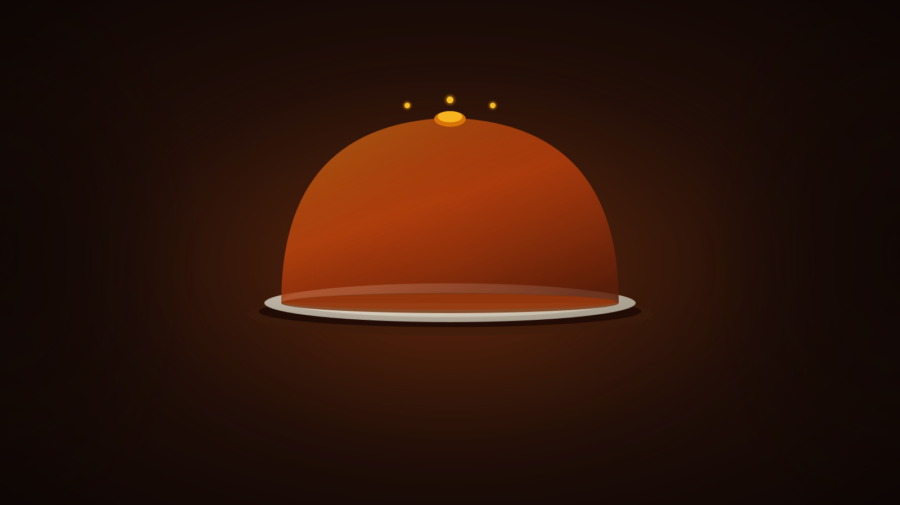
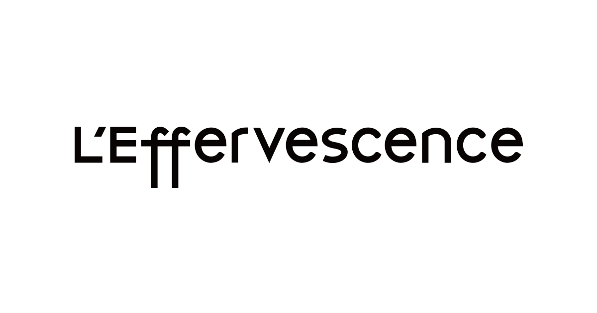
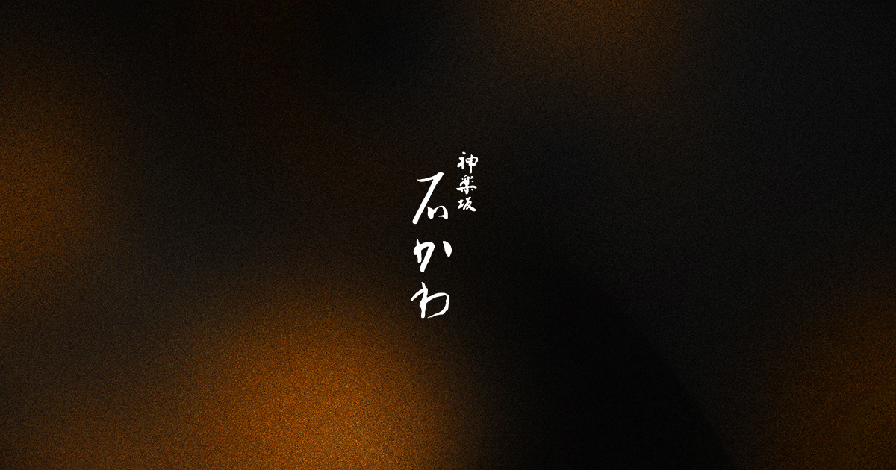
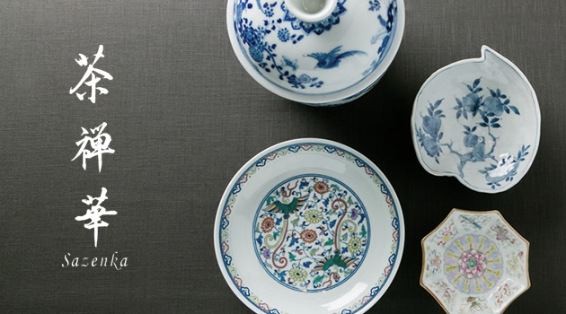
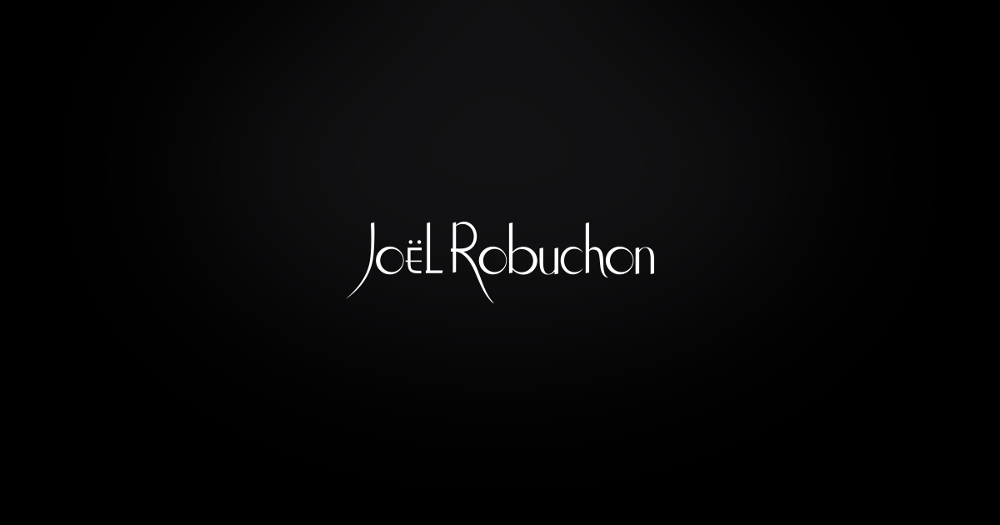
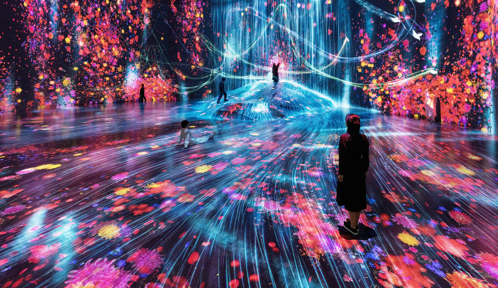

Tokyo · Weekend Itinerary · 2026
Twelve restaurants hold three Michelin stars in Tokyo. The one you choose determines your neighborhood, your post-dinner walk, and everything you do the day before. This is how to plan it — booking clocks first, itinerary second.
Before anything else
Every anchor in this weekend runs on an independent countdown clock. Stack them in sequence before you book the flight. [1]
Saturday 18:00–19:00 slots disappear within hours of opening. Most restaurants open books 1–2 months out; Ishikawa and Myojaku need 2+ months.
Via Pocket Concierge, TABLEALL, or direct
Tickets release 10:00 JST on the 10th for the following month only. In-month bookings are too late. [18]
Lawson Ticket only
Set a phone alarm. Sunset slots vanish in minutes. Counter tickets cost +¥700 after 15:00. [2]
Book online, not at counter
Reopened Jun 17, 2026 after renovation. Reservations open 31 days out at 18:00 JST. [10]
Only if visiting after Jun 17
Weekend slots go fast. Book ≥ 2 weeks ahead. Azabudai Hills from ¥3,800. The weather-proof Sunday anchor for rainy season. [3]
Official site or DMM (Planets)
Senso-ji, Meiji Shrine, Tsukiji market, Harajuku, Yanaka, Golden Gai, Hamarikyu — all open-access. Plan freely once the anchor bookings are locked.
No advance required
Pick your table
Tokyo's 12 three-star restaurants span ¥33k–100k per person. The right choice isn't the most prestigious — it's the one that matches how you want to travel and how you like to book. [17]

Free English online booking. Vegetarian-friendly. Six consecutive three-star years. Chef Shinobu Namae's innovative French in Nishi-Azabu puts you a short walk from Nakameguro's lantern-lit canal. SÉZANNE (Marunouchi) is the most central and bookable via the Four Seasons concierge — the path of least resistance if you're staying there. [6] [5]

Mui-shizen — serve cuisine true to nature. Chef Hideki Ishikawa has held three stars without interruption since 2008. The alley setting in old-Edo Kagurazaka is the answer for anyone asking "what does a Tokyo Michelin dinner actually feel like?" Among the hardest to book without Pocket Concierge or TABLEALL. [7]

Tokyo is also the only city where you can eat Chinese cuisine at three-star level. Chef Tomoya Kawada's Chinese tea-kaiseki in Hiroo is a meal you can't replicate anywhere else. Reservations open on the 1st of each month for dates two months ahead. Or: Harutaka for Edomae sushi (couples only, parties of exactly two). [14]

A literal Château inside Yebisu Garden Place. Chef Kenichiro Sekiya (Meilleurs Ouvriers de France) holds three stars without interruption since 2008. The most expensive dinner in the cohort — and the most opulent room. Places you near Daikanyama and Nakameguro for the post-dinner walk. [13]
The itinerary
A proven sequence. Tsukiji is Saturday-only (closed Sundays). Shibuya Sky is pre-booked. The dinner is your anchor. Sunday is intentionally lighter.
Day one
Arrive early. Most stalls close by 14:00; closes Sundays entirely. Tamagoyaki, tuna cuts, coffee — fuel before the temples. [19]
70–80% fewer visitors before 10:00. Main hall 06:00–17:00; grounds lit until 23:00. Allow 1–2 hours. [20]
Meiji Shrine → Harajuku → Shibuya
A walkable afternoon arc. Shrine free. Takeshita Street's 130 shops. Omotesando as the decompression corridor. [21]
Shibuya Sky — pre-booked
Your 28-days-out alarm paid off. The Scramble from 46 floors at golden hour. From ¥2,500 online. [2]
★★★ Dinner — your anchor
The meal the whole weekend is built around. Dress code varies; perfume prohibited at Ryugin. Budget the full evening. [1]
If you're near Nishi-Azabu or Ebisu, the lantern-lit Meguro River is 15 minutes on foot. No booking, no rush. [4]
Day two
teamLab Borderless — pre-booked
Opens 08:30. Azabudai Hills. The immersive art anchor — and the weather-proof choice if June rains arrive. From ¥3,800. [3]

Contemplative afternoon — choose one
Two strong options below. Don't try both.
Hamarikyu Garden — tidal seawater pond, ¥300, open 09:00–17:00. Tea ceremony at Nakajima teahouse on the island (¥500 matcha + ¥1,000 wagashi). [22]
Yanaka — pre-war street layout intact, ~70 small shops on Yanaka Ginza, temple cats everywhere. No entry fee. [23]
Or: swap Sunday for a day trip
For a first visit, two full days in the city wins. But if you trade Sunday for a day trip:
Dinner → district
Post-dinner geography matters. Match the restaurant to the neighborhood that sets the evening's mood.
| Restaurant | District | Post-dinner walk |
|---|---|---|
| L'Effervescence · Myojaku | Nishi-Azabu, Minato | Nakameguro canal (10 min taxi) — lantern-lit, late-night cafés |
| Kagurazaka Ishikawa | Kagurazaka, Shinjuku | Old-Edo alley exploration; Golden Gai (¥1,500 taxi) for a nightcap |
| Joël Robuchon | Ebisu, Meguro | Daikanyama T-Site or Meguro River — 10 min walk |
| Sazenka | Hiroo, Minato | Quiet residential; Roppongi Art Triangle if you want a late gallery |
| SÉZANNE | Marunouchi, Chiyoda | Most central; easy taxi to Ginza or Shinjuku Golden Gai |
| Nihonryori RyuGin | Hibiya, Chiyoda | Tokyo Midtown Hibiya; Ginza a short walk east for late shopping streets |
If you're going in June
June is tsuyu — rainy season. Some bookings open, some close, and some aren't worth attempting.
Rainy season shifts the calculus
Plan for indoor anchors. teamLab Borderless and Planets become the Sunday anchor rather than a bonus — not because you ran out of ideas, but because it's genuinely the right call in rain. [3]
No sumo in June
The May basho closes May 24; the next is September 13. Morning stable practice (asageiko) is the only substitute, and most stables only admit guests through an interpreter contact. [9]
Pokémon Café reopened Jun 17
Closed Mar 23–Jun 16 for renovation. If you're visiting after June 17, reservations open 31 days out at 18:00 JST. [10]
Conference pairing — late June
AWS Summit Japan runs June 25–26 at Makuhari Messe. The strongest business-trip + leisure-weekend pairing of the year. Autumn alternative: DroidKaigi (Sep 1–3) or iOSDC (Sep 11–13), which coincides with the September sumo basho. [9]
The full research